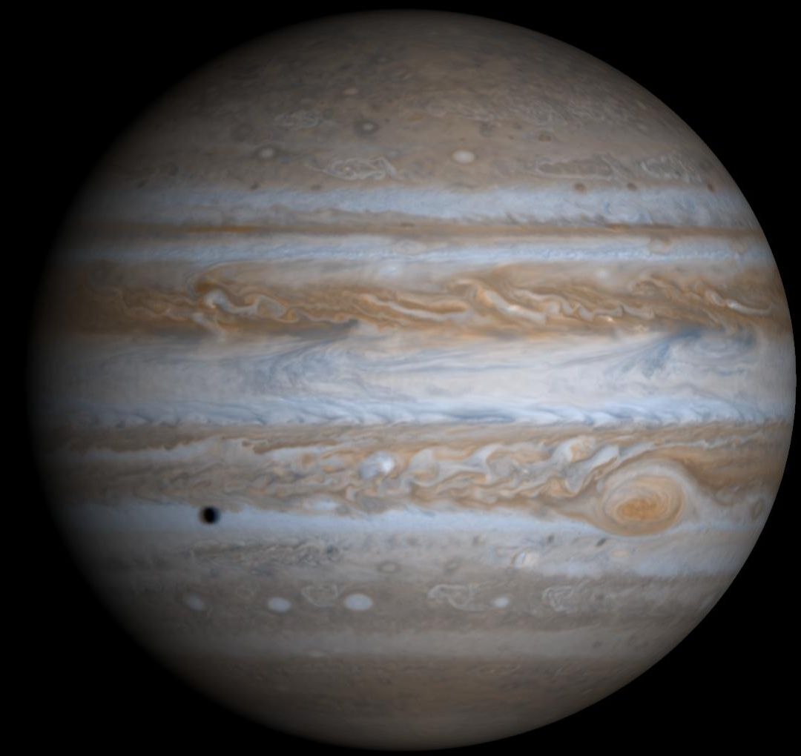

Jupiter also is the oldest planet, forming from the dust and gases left over from the Sun's formation 4.5 billion years ago. But it has the shortest day in the solar system, taking only 10.5 hours to spin around once on its axis.Jupiter orbits about 484 million miles (778 million kilometers) or 5.2 Astronomical Units (AU) from our Sun (Earth is one AU from the Sun).Jupiter is a gas giant and so lacks an Earth-like surface. If it has a solid inner core at all, it’s likely only about the size of Earth.
